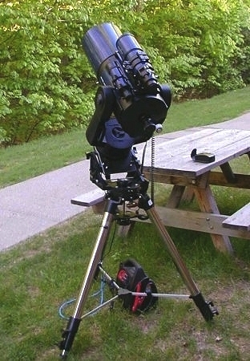

Observing The Clear Sky Clock Meteorological US and International Solar Weather Current Solar Data Solar Terrestrial Activity Report
Amateur Resources AAVSO Comet Observations IOTA IMO Bright Supernova Minor Planet Center Ned Wright's Cosmology Astronomy 162 Astronomical Union Circulars
Featured WebSite of the Month: Cassini-Huygens ESA website

Questions, Comments? Janet L. Miller These pages were last updated on 01/27/09 07:26:02 AM Website Blog
November 2003 Total Lunar Eclipse (Click for full size image - 550kb)
Lest we forget
Meade "Classic" LX90
New Visitor? Read me First Common LX90 Questions
Manuals (PDF) LX90 "Classic" Manual (982Kb) LX90 LNT Manual(1.2Mb) Smartfinder Manual (1.4Mb) Autostar Manual (187Kb) Other Meade manuals
General Info/Mods Specifications Wedge adapter Azimuth adjuster mod and additional pictures Focuser adjustments Focuser Bearing Mod Meade weight set & mod Balancing an SCT ST80 & Losmandy Dovetail Declination Adjustments Base disassembly Corrector removal Encoder cleaning Pinouts, cables & bolt sizes Power Panel Schematics Polar alignment Drift alignment Using the wedge compass Tripod Markers What's a TLE?
Autostar/Suite Updates Autostar Suite Update Autostar Updater 4.6 Autostar Updater (4.1 latest) Rom Updates Here Mike Weasner's Firmware Library (For prior firmware version download) Tours and Orbital Elements
Related Links Arkansas Sky Observatory Ron Wodaski's SCT Collimation Thierry LeGault's Collimation Use of Visual Filters Yahoo! LX90 Users Group Bob's Knobs Mike Weasner's ETX site US Amateur Astronomy Clubs Other LX90 owner's pages


{kind=link}